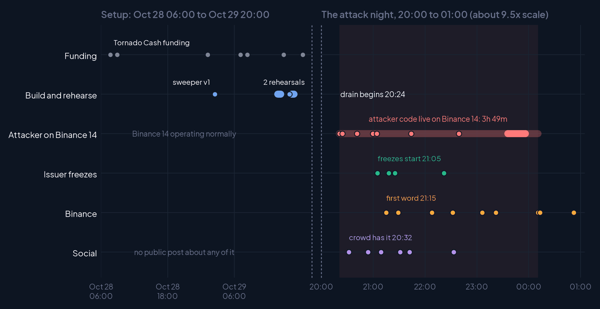
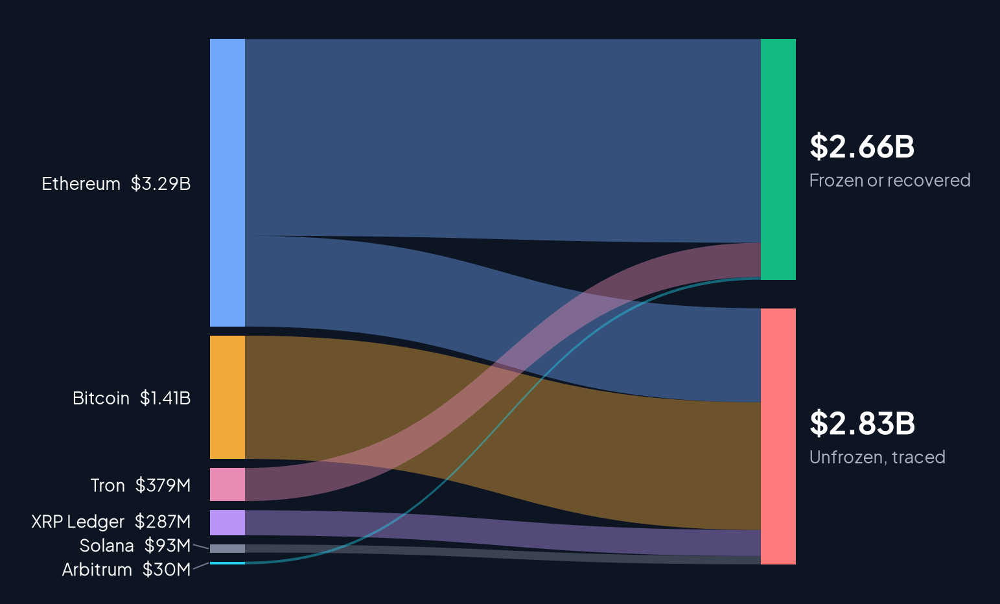

On October 29 a wallet funded only through Tornado Cash attached its own code to Binance 14, one of the exchange's main Ethereum hot wallets, and swept it in a single transaction. Every step had been rehearsed on mainnet that afternoon. This report rebuilds the whole attack from the Ethereum record and 53,181 posts, step by step.

Mixer funding, two sweeper contracts, two full rehearsals.
Delegation, one sweep, 823M USDC through a trusted wallet.
Re-sweeps, 533 incoming transfers, then revocation.
Issuer freezes, Binance statements, withdrawals paused.
About $2.66B frozen or recovered; about $2.83B unfrozen in traced addresses.
How posts reconstructed each step, and how fast.

| Dataset | What it holds | Download |
|---|---|---|
| Timeline events | Every event on the timelines: time, lane, detail, first public post. | ParquetCSV |
| Step-by-step acts | The six acts as timestamped steps. | ParquetCSV |
| Verified positions | Every traced balance, read live on six chains, with freeze status. | ParquetCSV |
| Top posts and accounts | The most-engaged posts of the event window: account, network, followers, engagements, link. | ParquetCSV |
| Raw on-chain reads | About 220 requests and responses, each with its UTC time, replayable. | Browse |
| AI guide | Schemas, key facts and quoting rules for assistants and analysts. | .md |
Ethereum transactions, receipts, contract code and the 50 authorizations were decoded from a public JSON-RPC node, with address histories from the Blockscout API. Balances were read live between 03:20 and 03:27 UTC on October 30 on Ethereum, Bitcoin, Tron, XRP Ledger, Solana and Arbitrum, and freeze status was read from each token contract. Social data comes from LunarCrush across X, TikTok, YouTube, Instagram, Reddit and news; each on-chain step is matched to the first public post that described it.
git clone https://github.com/JoeVezzani/binance-hack-reconstructed
cd binance-hack-reconstructed
python3 verify/replay_reads.py # replay every on-chain read
pip install -r requirements.txt
cd build && python3 build_report_v2.py # rebuild the PDF